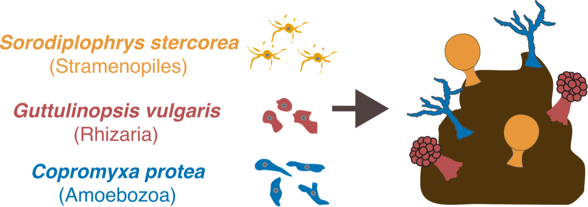
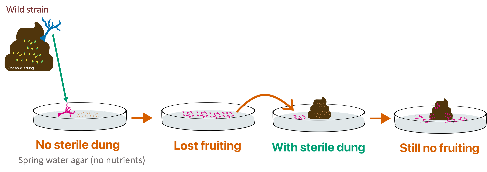

The rise of multicellularity in evolutionary history has captivated biologists for centuries. In this project, I am investigating the transition between unicellularity and multicellularity by studying protists that live inside poop. 
These protists, shown above, exhibit collective behavior and coodination between thousands of genetically kin cells to create multicellular structures called fruiting bodies. They all live in poop (of large herbivores such as cows or horses). They all exhibit this social or collective behavior. However, they are highly diverged from each other in evolutionary time. Located in different supergroups of life, Copromyxa protea, Guttulinopsis vulgaris, and Sorodiplophrys stercorea, are poop-loving social protists, separated in their evolution since the beginning of eukaryotic life (1-2 billion years ago). This means each amoeba has a fairly different cell biology, yet has convergently evolved social behavior in the same environment. Thus, they are a great model system for researching how social behavior between cells can evolve in eukaryotes.

The doo-doo dilemma comes from attempting to culture these amoebae without poop. They tend to grow, but they lose their social collective behavior (also called fruiting here). They just eat and divide. The odd part is, if you add these strains that lost social behavior back to dung, they do not regain social behavior. Thus, there is an unknown third component that is the trigger of social behavior. The goals of this project are as follows: (1) Develop an experimental system for studying dung-inhabiting amoebae such as C. protea. (2) Experiment with strains of C. protea that lost collective behavior to figure out the initial trigger. (3) Investigate the role of bacteria in the collective behavior of C. protea.

Copromyxa protea cells moving (10X).